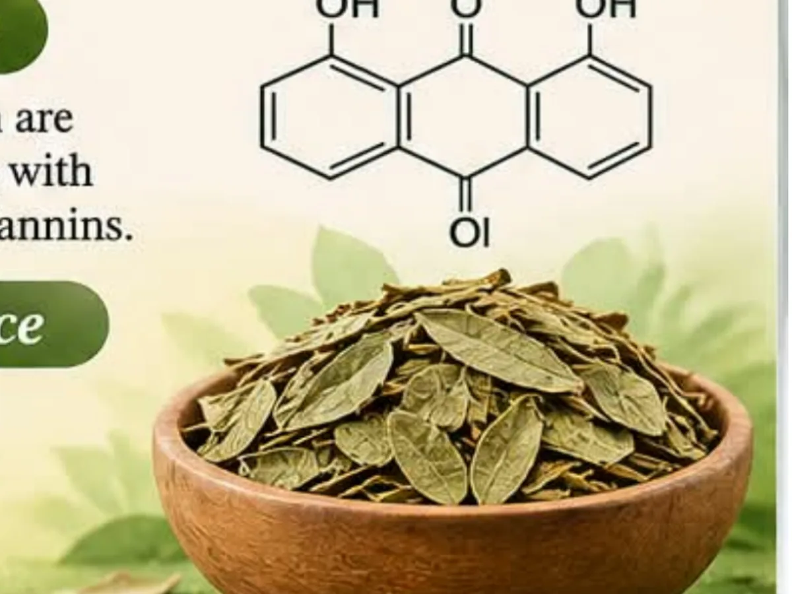
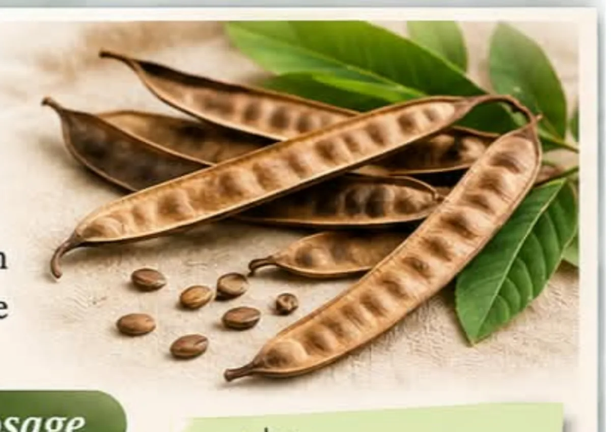

Botanical monograph
Senna alexandrina
A visual guide to a well-known medicinal plant traditionally used to support bowel movement and relieve constipation.
Scientific name
Senna alexandrina
Plant familyFabaceae
Parts usedLeaves & pods
Common nameAlexandria senna
Plant profile
Botanical identity, clearly presented.
Senna has been used for centuries in traditional herbal practice. Its leaves and pods are the principal parts used.

Active constituents
What gives senna its activity?
Senna contains sennosides, described in the source material as natural stimulant laxatives, alongside other plant compounds.
SennosidesPrimary stimulant-laxative constituents
FlavonoidsNaturally occurring plant compounds
AnthraquinonesA class of organic plant compounds
TanninsPolyphenolic botanical constituents
Medicinal importance
Traditional and clinical contexts.
The source highlights senna’s strong laxative action and its use for constipation and bowel cleansing before some medical procedures.
Relief of constipationShort-term support for bowel movement.
Bowel cleansingUsed in specific clinician-directed contexts.
Pre-colonoscopy preparationOnly as part of a healthcare professional’s preparation plan.
Traditional herbal medicineA long history of botanical use.

Dosage in the source
For educational reference only
Adults: 15–30 mg of sennosides, usually 1–2 tablets or 1 cup of senna tea, at bedtime.
Dosage may vary by form — tablets, tea, or syrup. Follow product instructions and seek professional guidance before use.Contraindications
- Intestinal obstruction or ileus
- Inflammatory bowel diseases, such as Crohn’s disease or ulcerative colitis
- Severe abdominal pain of unknown cause
Possible side effects
- Abdominal cramps
- Diarrhea
- Electrolyte imbalance with prolonged use
Precautions
Use with care.
Senna is not intended for casual long-term use. Pay attention to duration, hydration, and existing health conditions.